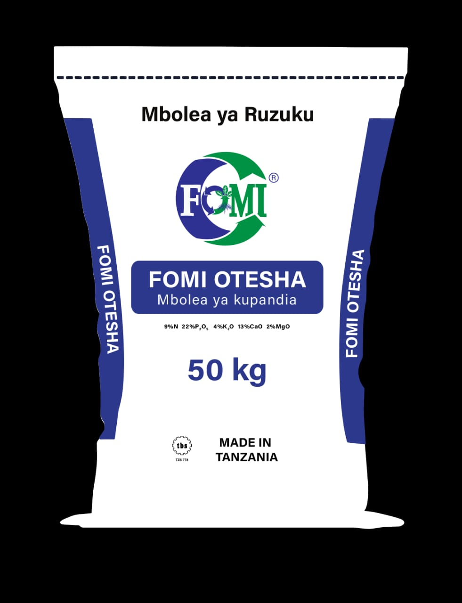

FOMI Otesha
NPK + Organic Matter + CaO + MgO
Applied at planting to stimulate strong root establishment, early vigor, and improved nutrient uptake in cereals, legumes, and vegetables.
- Packaging: 50 kg woven bag
- Application: Planting / Basal